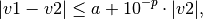

Utility functions for skypac.¶
This module provides utility functions for use
by stsci.skypac module.
| Authors: | |
|---|---|
| Mihai Cara (contact: help@stsci.edu) | |
| License: | |
| LICENSE | |
-
class
stsci.skypac.utils.MultiFileLog(console=True, enableBold=True, flog=None, append=True, autoflush=True, appendEOL=True)¶ This is a class that facilitates writting to multiple files.
MultiFileLogstores multiple file objects and can write the same log entry to all of them. It also facilitates controlling when a function can close a log file. Finally, it provides some utility functions that automate such things as appending EOL at the end of the log entry, flushing the files (to avoid losing log entries in case of uncaught exceptions), displayingWARNING,ERROR, etc. in bold on standard streams (sys.stdout, etc.)Parameters: - console : bool (Default = True)
Enables writting to the standard output.
- enableBold : bool (Default = True)
Enable or disable writing bold text to console, e.g., ‘WARNING:’ ‘ERROR:’, etc.
- flog : str, file, None, list of str or file objects (Default = None)
File name or file object to be added to
MultiFileLogduring the initialization. More files can be added lated withadd_logfile().- append : bool (Default = True)
Default open mode for the files that need to be opened (e.g., that are passed as file names). If
appendisTrue, new files added to aMultiFileLogobject will be opened in the “append” mode: new log entries will be appended to existing files – same as mode ‘a’ of standard functionopen(). WhenappendisFalse, any existing files will be overwritten.- autoflush : bool (Default = True)
Indicates whether or not to flush files after each log entry.
- appendEOL : bool (Default = True)
Indicates whether or not to add EOL at the end of each log entry.
-
add_logfile(flog, initial_skip=2, can_close=None, mode=None)¶ Add (and open, if necessary) a log file to the
MultiFileLogobject.Parameters: - flog : str, file, None, list of str or file objects (Default = None)
File name or file object to be added.
- initial_skip : int (Default = 2)
The number of blank line to be written to the file if not at the beginning of the file.
- can_close : bool, None (Default = None)
Indicates whether the file object can be closed by the
close()function:- mode : str, None (Default = None)
File open mode: same meaning as the
modeparameter of the Python’s built-inopen()function. IfNone, the mode will be inherited from file open mode set during initialization.
Returns: - flog : file object
File object of newly opened (or attached) file.
-
close()¶ Close all files opened by
MultiFileLog.It will close all files opened by
MultiFileLog- essentially, all files added as file name. It will not close files added as file handles.
-
enable_console(enable=True, enableBold=True)¶ Enable output to the standard console –
sys.stdout.Parameters: - enable : bool (Default = True)
Enable or disable output to
sys.stdout.- enableBold : bool (Default = True)
Enable or disable writing bold text to console, e.g., ‘WARNING:’ ‘ERROR:’, etc.
-
error(msg, *fmt)¶ Prints an error message. The word ‘ERROR:’ will be printed as bold on the console and enclosed in asterisks (*) in a disk file.
-
flush()¶ Flush all files.
-
important(msg, *fmt)¶ Prints an “important” message. The word ‘IMPORTANT:’ will be printed as bold on the console and enclosed in asterisks (*) in a disk file.
-
logentry(msg, *fmt, **skip)¶ Write a log entry to the log files.
Parameters: - msg : str
String to be printed. Can contain replacement fields delimited by braces {}.
- fmt
Parameters to be passed to
str.format()method for formatting the stringmsg.- skip : int
Number of empty lines that should follow the log message.
Examples
>>> logentry('Sky background for chip {} is {}', 'SCI1', 10.0, skip=2) will print: Sky background for chip SCI1 is 10.0 followed by two blank lines.
-
print_endlog_msg()¶ Print a message (“Log written to…”) indicating the end of the log.
-
set_close_flag(fh, can_close=True)¶ Modify the “can be closed” status of a given file.
Parameters: - fh : file object
- can_close : bool (Default = True)
Indicates if the file can be closed by the
close()function.Note
File object
fhmust have been already added to theMultiFileLogobject.
-
skip(nlines=1)¶ Skip a specified number of blank lines.
Parameters: - nlines : int (Default = 1)
-
unclose_copy()¶ Return a copy of the
MultiFileLogobject with all the attached files marked as “keep open”, that is, theclose()will not close these files.This is useful before passing the
MultiFileLogobject to a function that may add its own log files, and then attempt to close the files with theclose()method. Thus, by passing an “unclose copy”, one can be sure that the files opened at the top level will not be closed by other functions to which theMultiFileLogobject may be passed.
-
warning(msg, *fmt)¶ Prints a warning message. The word ‘WARNING:’ will be printed as bold on the console and enclosed in asterisks (*) in a disk file.
-
count¶ Return the number of files attached to the
MultiFileLogobject excluding thesys.stdoutfile.
-
class
stsci.skypac.utils.ResourceRefCount(resource, resource_close_fnct=None, *close_args, **close_kwargs)¶ A class that implements reference counting for various resources: file objects, PyFITS HDU lists, etc. It is intended to be used as a mechanism of controlling the “lifespan” of resources that can be used in different parts of the code “indipendently”. The resource is kept open as long as the reference count is larger than zero. Once the reference count is decreased to 0, the resource is automatically closed.
Note
The reference count of the newly created
ResourceRefCountobject is set to 0. It is user’s responsibility to increment the reference count of this object through the call tohold()function.Parameters: - resource
An object who must be kept open or closed based on reference count.
- resource_close_fnct : function (Default = None)
The function (usually a method of the attached resource), that can “close” the resource.
- close_args : tuple
Positional arguments to be passed to the
resource_close_fnct()function.- close_kwargs : dict
Keyword arguments to be passed to the
resource_close_fnct()function.
-
hold()¶ Increment the reference count of the attached resource.
-
is_subscribed_on_close(obj)¶ Check if the object is subscribed to on close notifications.
-
release()¶ Decrement reference count of the attached resource. If the reference count reaches zero, call all registered “on close” notify callbacks, and then call the “close” method on the resource which was set at initialization of the
ResourceRefCountobject. Finally, theresourceproperty of theResourceRefCountobject will be set toNone.
-
subscribe_close_notify(obj, callback=None)¶ Set the object and its method that need to be called when the resource is about to be closed.
-
unsubscribe_close_notify(obj)¶ Remove the object (and its method) from the list of callbacks that need to be notified of impending closing of the resource.
-
closed¶ Indicates if the resource is “closed”.
-
refcount¶ Reference count.
-
resource¶ Resource attached to a
ResourceRefCountobject.
-
class
stsci.skypac.utils.ImageRef(hdulist_refcnt=None)¶ A lightweight class that supports reference counting for FITS images and holds a
ResourceRefCountobject. It provides several attributes that describe main characteristics of the image (file) and essential functions for manipulating reference count.Parameters: - hdulist_refcnt : ResourceRefCount
A
ResourceRefCountobject holding aastropy.io.fits.HDUListobject.
Attributes: - filename : str
Name of the opened file. Can be
Nonefor in-memory createdastropy.io.fits.HDUListobjects.- can_reload_data : bool
Truefor files attached to a physical file,Falsefor in-memoryastropy.io.fits.HDUListobjects.- original_fname : str
Original name of the file as requested by the user. Note: may be different from
filenameif the orininal file was in GEIS or WAIVER FITS format and subsequently was converted to a MEF FITS format. In that case this attribute will show the name of the original GEIS or WAIVER FITS file.- original_ftype : str
Type of the original file. Can take one of the following values: ‘MEF’, ‘SIMPLE’, ‘GEIS’, ‘WAIVER’, or ‘UNKNOWN’.
- original_exists : bool
Indicates if the physical file exists. It is
Falsefor in-memory images.- mef_fname : str, None
Name of the MEF FITS file if exists,
Noneotherwise.- mef_exists : bool
Indicates whether the MEF FITS file exists.
- DQ_model : str, None
Type of the DQ model: ‘external’ for WFPC, WFPC2, and FOC instruments (or non-HST data if set so) that have DQ data in a separate (from image) file and ‘intrinsic’ for ACS, etc. images that have DQ extensions in the image file. It is
Noneif the image does not have DQ data.- telescope : str
Telescope that acquired the image.
- instrument : str
Instrument used to acquire data.
- fmode : str
File mode used to open FITS file. See
astropy.io.fits.openfor more details.- memmap : bool
Is the
astropy.io.fits.HDUListmemory mapped?
-
hold()¶ Increment the reference count of the attached resource.
-
info(self, fh=sys.stdout)¶ Print a summary of the object attributes.
-
release()¶ Decrement reference count of the attached resource. If the reference count reaches zero, the attached
ResourceRefCountobject will be closed and set toNone.
-
set_HDUList_RefCount(hdulist_refcnt=None)¶ Set (attach) a new
ResourceRefCountobject that holds aastropy.io.fits.HDUListobject. This is allowed only if the already attachedResourceRefCountcan be closed. The reference count of theResourceRefCountbeing attached will be incremented.Parameters: - hdulist_refcnt : ResourceRefCount, None
A
ResourceRefCountobject containing aastropy.io.fits.HDUListobject. If it isNone,it will release and close the attachedResourceRefCountobject.
Raises: - ValueError
The (already) attached
ResourceRefCountmust have reference count <= 1 so that it can be closed before being replaced with a new resource.- ValueError
The resource being attached must be in an open state.
-
extname¶ Extension name of the first extension.
-
hdu¶ astropy.io.fits.HDUListof the attached image.
-
refcount¶ Reference count of the attached
astropy.io.fits.HDUList.
-
stsci.skypac.utils.is_countrate(hdulist, ext, units_kwd='BUNIT', guess_if_missing=True, telescope=None, instrument=None, verbose=True, flog=None)¶ Infer the units of the data of the input image from the input image. Specifically, it tries to infer whether the units are counts (or count-like) or if the units are count-
rate.The units of data are determined from the
BUNITheader keyword by searching its value for the division sign ‘/’. If the division sign is not found, then the units are assumed to be “counts”. If the division sign is found in theBUNITvalue and if the numerator is one of the following: ‘ELECTRONS’,’COUNTS’, or ‘DN’, and denumerator is either ‘S’,’SEC’, or ‘SECOND’, then the units are assumed to be count-rate.Parameters: - hdulist :
astropy.io.fits.HDUList astropy.io.fits.HDUListof the image.- ext : tuple, int, str
Extension specification for whose data the units need to be inferred. An int
extspecifies extension number. A tuple in the form (str, int) specifies extension name and number. A stringextspecifies extension name and the extension version is assumed to be 1. See documentation forastropy.io.fits.getDatafor examples.- units_kwd : str (Default = ‘BUNIT’)
FITS header keyword describing data units of the image. This keyword is assumed to be in the header of the extension specified by the
extparameter.- guess_if_missing : bool (Default = True)
Instructs to try make best guess on image units when the keyword specified by
units_kwdis not found in the image header. The first action will be to look for this keyword in the primary header, and if not found, infer the units based on the telescope, instrument, and detector information.- telescope : str, None (Default = None)
Specifies the telescope from which the data came. If not specified, the value specified in the
TELESCOPkeyword in the primary header will be used.- instrument : str, None (Default = None)
Specifies the instrument used for acquiring data. If not specified, the value specified in the
INSTRUMEkeyword in the primary header will be used.- verbose : bool (Default = True)
Specifies whether to print warning messages.
- flog : str, file, MultiFileLog, None (Default = None)
Specifies the log file to which the messages should be printed. It can be a file name, a file object, a MultiFileLog object, or None.
Returns: - hdulist :
-
stsci.skypac.utils.ext2str(ext, compact=False, default_extver=1)¶ Return a string representation of an extension specification.
Parameters: - ext : tuple, int, str
Extension specification can be a tuple of the form (str,int), e.g., (‘sci’,1), an integer (extension number), or a string (extension name).
- compact : bool (Default = False)
If
compact=Truethe returned string will have extension name quoted and separated by a comma from the extension number, e.g., “‘sci’,1”. Ifcompact=Falsethe returned string will have extension version immediately follow the extension name, e.g., ‘sci1’.- default_extver : int (Default = 1)
Specifies the extension version to be used when the
extparameter is a string (extension name).
Returns: - strext : str
String representation of extension specification
ext.
Raises: - TypeError
Unexpected extension type.
Examples
>>> ext2str('sci',compact=False,default_extver=6) "'sci',6" >>> ext2str(('sci',2)) "'sci',2" >>> ext2str(4) '4' >>> ext2str('dq') "'dq',1" >>> ext2str('dq',default_extver=2) "'dq',2" >>> ext2str('sci',compact=True,default_extver=2) 'sci2'
-
stsci.skypac.utils.openImageEx(filename, mode='readonly', dqmode='readonly', memmap=True, saveAsMEF=True, output_base_fitsname=None, clobber=True, imageOnly=False, openImageHDU=True, openDQHDU=False, preferMEF=True, verbose=False)¶ Open an image file and (if requested) the associated DQ file and return corresponding
ImageRefobjects.This function is an enhanced version of
stsci.tools.fileutil.openImage()function in that it can open both the image file and the associated DQ image. It also provides additional inormation about the opened files: file type, original file name, DQ model (“intrinsic”, where DQ data are placed in the same file as the science data, or “extrinsic” when DQ data are in a separate file from the science data), etc. Because of the way it was implemented, it requires half of the number of calls toastropy.io.fits.openthus making it almost twice as fast as theopenImage()function.Parameters: - filename : str
File name of the file to be opened. The image file formats are recognized: simple/MEF FITS, HST GEIS format, or WAIVER FITS format.
- mode : str (Default = ‘readonly’)
File mode used to open main image FITS file. See
astropy.io.fits.openfor more details.- dqmode : str (Default = ‘readonly’)
File mode used to open DQ image FITS file. See parameter
modeabove for more details.- memmap : bool (Default = True)
Should memory mapping to be used whe opening simple/MEF FITS?
- saveAsMEF : bool (Default = True)
Should an input GEIS or WAIVER FITS be converted to simple/MEF FITS?
- output_base_fitsname : str, None (Default = None)
The base name of the output simple/MEF FITS when
saveAsMEFisTrue. If it isNone, the file name of the converted file will be determined according to HST file naming conventions.- clobber : bool (Default = True)
If
saveAsMEFisTrue, should any existing output files be overwritten?- imageOnly : bool (Default = False)
Should this function open the image file only? If
True, then the DQ-related attributes will not be valid.- openImageHDU : bool (Default = True)
Indicates whether the returned
ImageRefobject corresponding to the science image file should be in an open or closed state.- openDQHDU : bool (Default = False)
Indicates whether the returned
ImageRefobject corresponding to the DQ image file should be in an open or closed state.- preferMEF : bool (Default = True)
Should this function open an existing MEF file that complies with HST naming convention when the input file is in GEIS or WAIVER FITS format, even when
saveAsMEF=Falseorclobber=False?- verbose : bool (Default = True)
If
True, some addition information will be printed out to standard output.
Returns: - (img, dqimg) : (ImageRef, ImageRef)
A tuple of
ImageRefobjects corresponding to the science image and to the DQ image. Each object in the returned tuple open or closed depending on the input arguments.Note
If the returned object is open, then its reference count will be at least 1. The caller is responsible for “releasing” the object when it is no longer needed.
Note
If the DQ model of the opened file is “intrinsic”, then the
dqimgcomponent of the returned tuple will hold a reference counter to the same image. Thus, for “intrinsic” DQ data models, the reference count of the returned objects may be 2 (if both scienceopenImageHDUandopenDQHDUareTrue).
Raises: - ValueError
If input file is neither a GEIS file nor a FITS file.
- ValueError
Errors occured while accessing/reading the file possibly due to corrupted file, non-compliant file format, etc.s
-
stsci.skypac.utils.count_extensions(img, extname='SCI')¶ Return the number of
extnameextensions in the input imageimg. IfextnameisNone, return the number of all image-like extensions.Input parameters are identical to those of
get_extver_list().See also
Examples
>>> count_extensions('j9irw1rqq_flt.fits',extname='SCI') 2 >>> count_extensions('j9irw1rqq_flt.fits',extname=None) 10
-
stsci.skypac.utils.get_ext_list(img, extname='SCI')¶ Return a list of all extension versions of
extnameextensions.imgcan be either a file name or aastropy.io.fits.HDUListobject.This function is similar to
get_extver_list(), the main difference being that it returns a list of fully qualified extensions: either tuples of the form (extname,extver) or integer extension numbers (whenextname=None).See also
Examples
>>> get_ext_list('j9irw1rqq_flt.fits',extname='SCI') [('SCI', 1), ('SCI', 2)] >>> get_ext_list('j9irw1rqq_flt.fits',extname=None) [1, 2, 3, 4, 5, 6, 8, 9, 10, 11]
-
stsci.skypac.utils.get_extver_list(img, extname='SCI')¶ Return a list of all extension versions with
extnameextension names. IfextnameisNone, return extension numbers of all image-like extensions.Note
If input image is a
ImageRef, this function will not modify its reference count.Parameters: - img : str,
astropy.io.fits.HDUList, orImageRef Input image object. If
imgis a string object (file name) then that file will be opened. If the file pointed to by the file name is a GEIS or WAIVER FITS file, it will be converted to a simple/MEF FITS format ifclobber`=`True.- extname : str (Default = ‘SCI’)
Indicates extension name for which all existing extension versions should be found. If
extname`=`None, thenget_extver_listwill return a list of extension numbers of all image-like extensions.
Returns: - extver : list
List of extension versions corresponding to the input
extname. Ifextname`=`None, it will return a list of extension numbers of all image-like extensions.
Raises: - IOError
Unable to open input image file.
- TypeError
Argument
imgmust be either a file name (str), anImageRef, or aastropy.io.fits.HDUListobject.- TypeError
Argument
extnamemust be either a string or None.
See also
Examples
>>> get_extver_list('j9irw1rqq_flt.fits',extname='sci') [1, 2] >>> get_extver_list('j9irw1rqq_flt.fits',extname=None) [1, 2, 3, 4, 5, 6, 8, 9, 10, 11
- img : str,
-
stsci.skypac.utils.file_name_components(fname, detect_HST_FITS_suffix=True)¶ Splits base file name into a root, suffix, and extension. Given a full path, this function extracts the base name, and splits it into three components: root name, suffix, and file extension.
Parameters: - fname : str
file name
- detect_HST_FITS_suffix : bool (Default = True)
If True, detects the suffix of most HST files by looking for the rightmost occurence of the underscore (‘_’) in the file name.
Returns: - root : str
Root name of the file. When
detect_HST_FITS_suffix=True, this is the part of the file name preceding the rightmost suffix separator (‘_’). Otherwise, it is the base file name without file extension.- suffix : str
If
detect_HST_FITS_suffix=True, this field will contain the suffix of most HST files, i.e., the part of the file name contained between the rightmost suffix separator (‘_’) and file extension separator. This return value will be an empty string if Ifdetect_HST_FITS_suffix=Falseor if the file name has no extension separator.- fext : str
File extension
Examples
>>> file_name_components('/data/m87/ua0x5001m_c0f.fits') ('ua0x5001m', 'c0f', '.fits') >>> file_name_components('/data/m87/ua0x5001m_c0f.fits',False) ('ua0x5001m_c0f', '', '.fits')
-
stsci.skypac.utils.temp_mask_file(rootname, suffix, ext, data, dir=os.path.curdir, fnameOnly=False)¶ Saves 2D data array to temporary simple FITS file. The name of the emporary file is generated based on the input parameters.
Parameters: - data : numpy array
Data to be written to the temporary FITS file. Data will be written in the primary HDU.
- rootname : str
Root name of the file.
- prefix : str (Default = ‘tmp’)
Prefix to be added in front of the root name. If
randomize_prefixisTrue, then a random string will be added to the right of the string specified byprefix(with no separator between them). Prefix (or the randomized prefix) will be separated from the root name by the string specified insep. If prefix is an empty string ('') then no prefix will be prepended to the root file name.- suffix : str (Default = ‘mask’)
Suffix to be added to the root name. Suffix will be separated from the root name by the string specified in
sep.- ext : int, str, or tuple of the form (str, int)
Extention to be added to the temporary file after the suffix. Extension name string will be separated from the suffix by the string specified in
sep.- sep : str (Default = ‘_’)
Separator string to be inserted between (randomized) prefix and root name, root name and suffix, and suffix and extension.
- randomize_prefix : bool (Default = True)
Specifies whether to add (postpend) a random string to string specified by
prefix.- dir : str (Default = os.path.curdir)
Directory to which the temporary file should be written. If directory
dir=Nonethen the file will be written to the default (for more details, see the explanation for argumentdirto the tempfile.mstemp function).- fnameOnly : bool (Default = False)
Specifies what should
temp_mask_filereturn: file name of the created file (iffnameOnly=True), or a tuple with the file name of the created file and an openImageRefobject of that file.
Returns: - fname : str
File name of the temporary file.
- mask : ImageRef
An open
ImageRefobject of the temporary FITS file. This is returned as a tuple together with the file name only whenfnameOnly=False.Note
Mask data will be in the Primary HDU.
Raises: - TypeError
Extension specifier must be either an integer, a string, or a tuple of the form (str, int).
Examples
>>> import numpy as np >>> from stsci import skypac >>> mask=np.ones((800,800),dtype=np.uint8) >>> skypac.utils.temp_mask_file(mask, 'ua0x5001m', ... suffix='skymatch_mask', ext=('sci',4), dir='/data/m87', ... fnameOnly=True) '/data/m87/tmp39gCpw_ua0x5001m_skymatch_mask_sci4.fits' >>> skypac.utils.temp_mask_file(mask, 'ua0x5001m', ... suffix='skymatch_mask', ext=('sci',4), dir='.', fnameOnly=True) 'tmpxl7LTO_ua0x5001m_skymatch_mask_sci4.fits' >>> skypac.utils.temp_mask_file(mask, 'ua0x5001m', ... suffix='skymatch_mask', ext=('sci',4), dir='.',fnameOnly=False) ('tmpxMcL5g_ua0x5001m_skymatch_mask_sci4.fits', <skypac.utils.ImageRef object at 0x101f5a3d0>)
-
stsci.skypac.utils.almost_equal(arr1, arr2, fp_accuracy=None, fp_precision=None)¶ Compares two values, or values of
ndarrayand verifies that these values are close to each other. For exact type (integers and boolean) the comparison is exact. For inexact types (float,numpy.float32, etc.) it checks that the values (or all values in anumpy.ndarray) satisfy the following inequality:
where
ais the accuracy (“absolute error”) andpis precision (“relative error”).Parameters: - arr1 : float, int, bool, str, numpy.ndarray, None, etc.
First value or array of values to be compared.
- arr2 : float, int, bool, str, numpy.ndarray, None, etc.
Second value or array of values to be compared.
- fp_accuracy : int, float, None (Default = None)
Accuracy to withing values should be close. Default value will use twice the value of the machine accuracy (machine epsilon) for the input type. This parameter has effect only when the values to be compared are of inexact type (e.g.,
float).- fp_precision : int, float, None (Default = None)
Accuracy to withing values should be close. Default value will use twice the value of the machine precision (resolution) for the input type. This parameter has effect only when the values to be compared are of inexact type (e.g.,
float).
Returns: Raises: